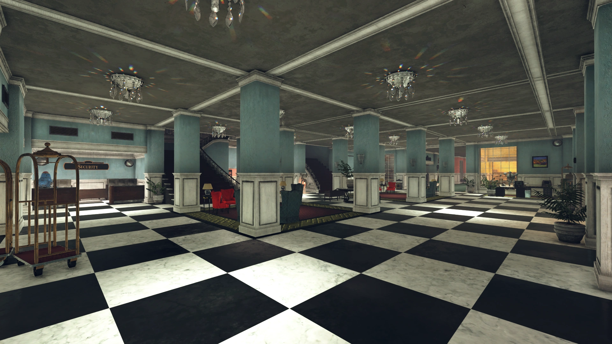
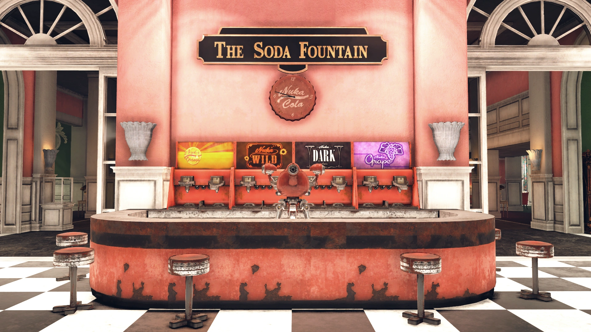
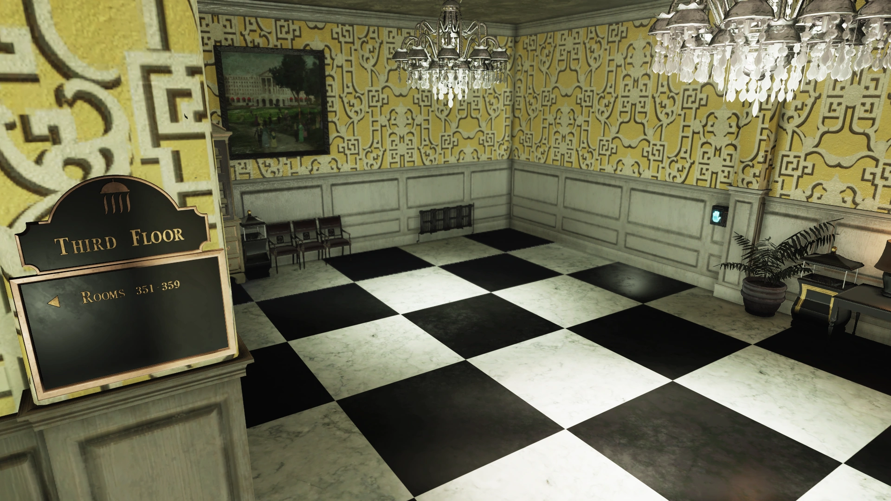
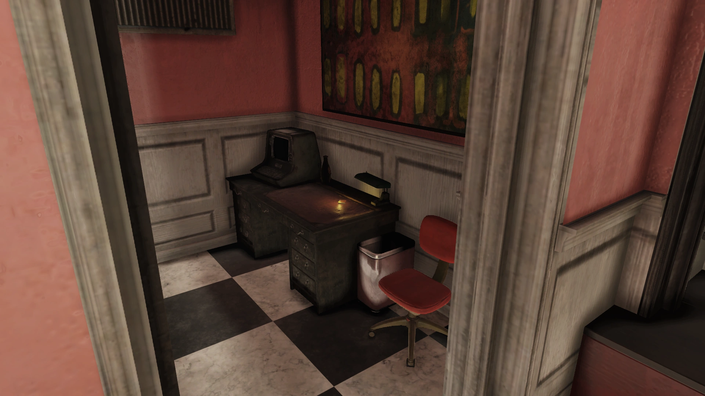
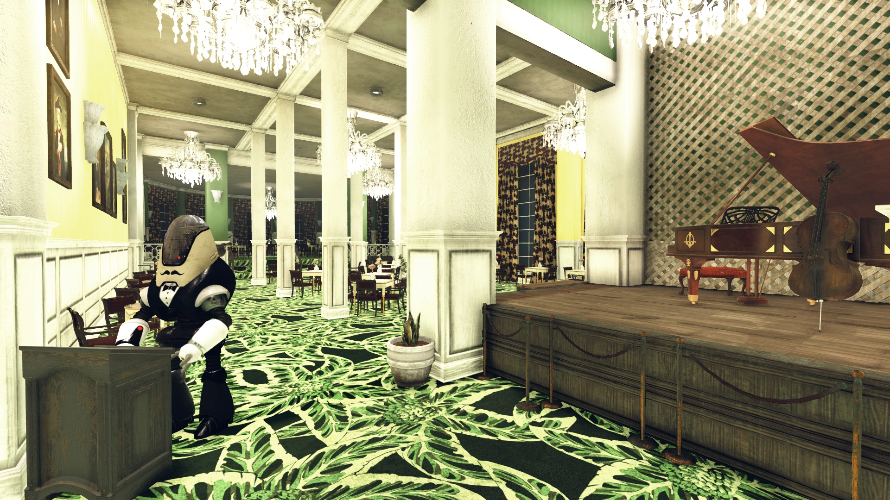
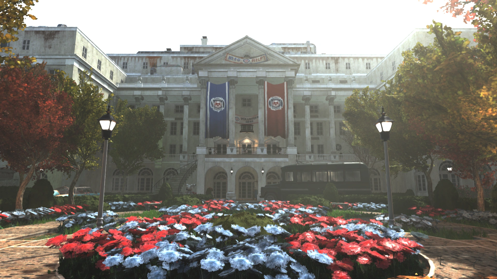
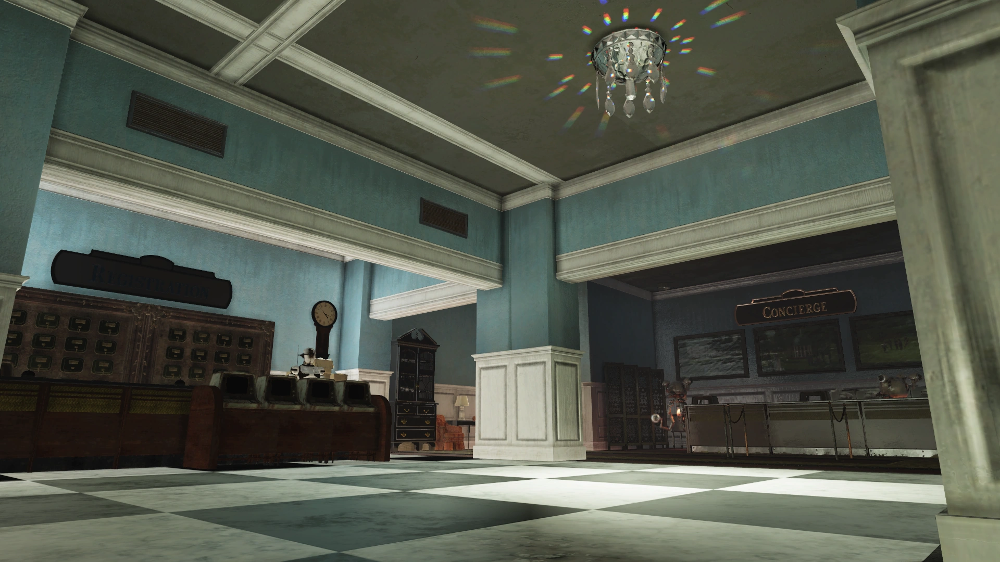
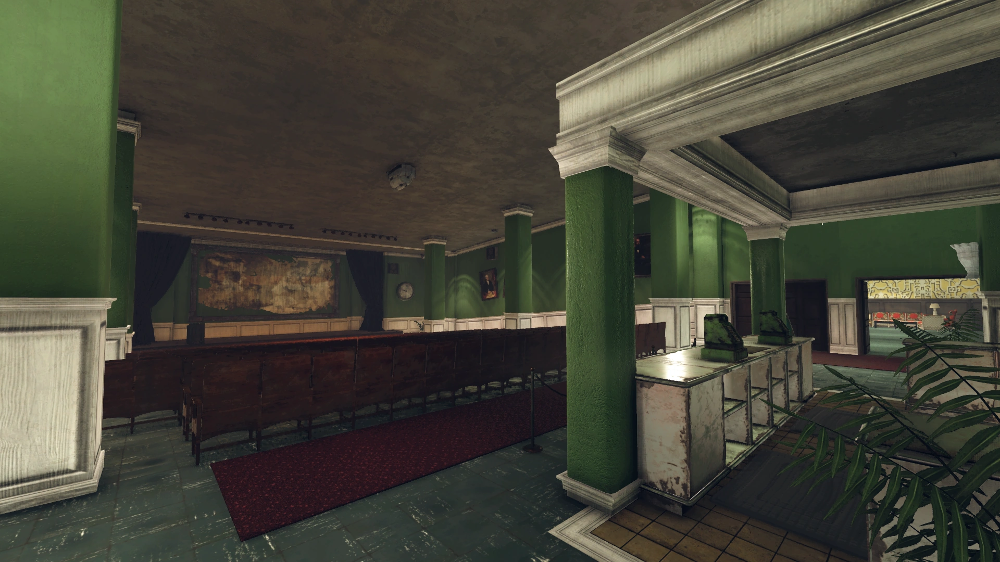
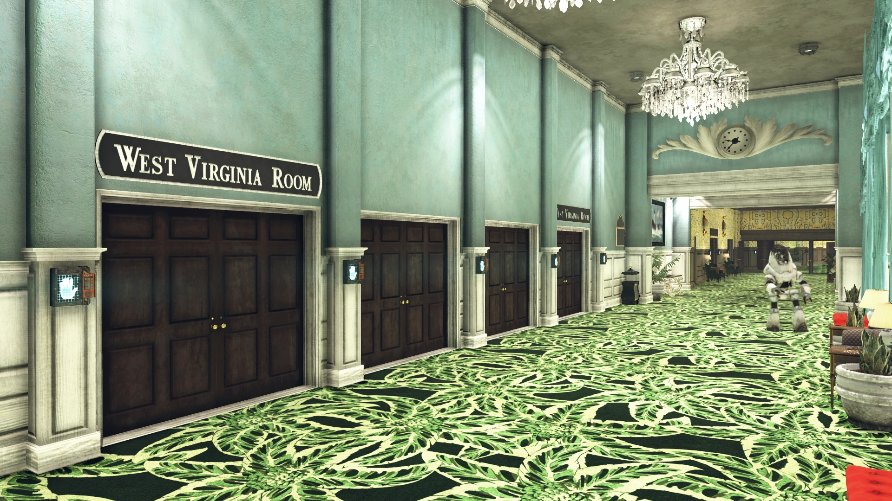

The Whitespring Resort
ホワイトスプリング・リゾート
概要
ホワイトスプリング・リゾートは、アパラチアのサベージ・ディバイドに位置する高級ホテルで、ホワイトスプリングエリアのメインビルディングです。
1858年に建設され、敷地内の天然硫黄泉にちなんで名付けられました。優雅なショップ、高級ダイニング、レクリエーション施設を備え、大戦後もロボットスタッフがほぼ完璧な状態で維持しています。
レスポンダーの再建に伴い、リゾート本館は「ホワイトスプリング避難所」としても知られるようになり、ザ・ピットを含む荒れ地中から難民を受け入れています。
ホワイトスプリング避難所
2104年、レスポンダーの再建を目指すグループがホワイトスプリング・リゾートに本部を設立しました。
オーランドはリゾートの「マネジメント」（戦前のオーナー）の代理人を名乗り、レスポンダーの活動を支援しています。マネジメントは「現在の状況」のため直接の監督ができないとされていますが、その正体は謎に包まれています。
注目すべきは、レスポンダーは建物の地下にあるホワイトスプリング・バンカーやエンクレイヴのAI「MODUS」の存在を回避しているか、あるいは知らないということです。

レイアウト
1階
正面入口から入ると、階段を降りるとロワーロビーに、直進すると総支配人のオフィスに到達します。
ロワーロビー左手にはセキュリティステーション、コンシェルジュ、フロントデスクがあります。
奥に進むとホワイトスプリング・シアターへ続きます（レスポンダー入居後は改装のため閉鎖）。
ショッピングモール（ホワイトスプリング・モール）が1階の廊下に沿って並んでいます。
アーティザンズ・コーナーには全種類の作業台、パンチカードマシン、スタッシュボックスが設置されており、プレイヤーの拠点として最適です。
ベンダー一覧
| 店舗 | ベンダー |
|---|---|
| Studio 58 | ペンドルトン |
| Artisan's Corner | フリードリヒ |
| Elegance | マーガレット |
| Le Grand Gourmet | マリー / アントワーヌ |
| Captain Kids | キャプテン・キッド |
| Creekside Lodge | B.O.S.ベンダー / カニンガム |
| The Newsstand | レスポンダーベンダー / アレクシス |
| Aurum | ショッピングモールベンダー / ヘレナ |
| Whitespring Spa | フリーステイツベンダー / アロエ / ヴェラ |
| Black Powder | レイダーベンダー / フリントロック |
| Bespoke | トゥイード |
| Live Chic | フラウレスカ |
| The Chemist's | ドク・スタンリー |

2階
正面入口から階段を上ると上階ロビーに出ます。
右手にはソーダファウンテン（バブルス＆ジュゼッペ・デッラ・リパ）とロビーバー（タニン）、左手にはダイニングルーム（ロバート＆エスミー・ルソー）が並びます。
奥にはボールルームが4室あり（ウェストバージニア・ルーム、サミット・ルーム、アレゲニー・ルーム、ガヴァナーズ・ホール）、うちサミット・ルームのみ解錠されています。
3階
ガヴァナーズ・ホール前の階段から3階へ。
壁にハンドスキャナーがあり、起動するとホワイトスプリング・バンカーへの隠し通路が開きます。
このスキャナーはクエスト「One of Us」でエンクレイヴに加入した後にのみ使用可能です。

主なアイテム
- 🎧 A Night at the Neapolitan, Part 1 — ホロテープ（避難所のバーデスク）
- 🎧 A Night at the Neapolitan, Part 2 — ホロテープ（避難所のビリヤード台）
- 🎧 ブリッジクラブの録音 — ホロテープ（2階ボールルーム付近）
- 🎧 Everything changes — ホロテープ（2階の胸像横）
- 🎧 ジョイスのメッセージ — ホロテープ（キャンディショップ事務室横）
- 🎧 One last toast — ホロテープ（サミット・ルーム奥のダイニング）
- 📋 解雇通知 — ノート（総支配人オフィスの本棚）
- 🎧 ホワイトスプリング・スタッフミーティング 12.27.79 — ホロテープ（総支配人オフィスのテーブル）
ターミナルエントリ
キャンディショップ事務室ターミナル — ジョイス・イーストンの日記
みんな分かっていた。それが辛い。
「アイアンクラッド・サービス」が何を意味するか、みんな知っていた。ロボットを入れて、下っ端を追い出す——他の大企業と同じだ。
どうすればいい？ 組合を作る？ 鉱山で何が起きたかは知っている。ピケなんて張りたくない。みんなこの場所を愛している。商売を余計に傷つけるのは、一番したくないことだ。
今夜、女の子たちとルイスバーグのコンサートに行く。最後の一緒の夜かもしれない。明日から、新しい仕事を探さなきゃ。
3ヶ月、面接は一つもなかった。状況が悪いのは知っていたが、こんなに酷いとは。
エイミーはモノンガーの叔父にコネで発電所の仕事を貰った。キャリーは実家に戻る。残りの私たちはまだ焦っている。私たちのような者には、もう何も残っていない。
ここに未来がないのは分かっている。だからこそ娘たちに教育を受けさせた。でも授業料の支払いが迫っている。デイヴと二人とも失業……もうローンを組むしかない。クリスマスまでは持つかもしれない。
神様。神様、どうすれば。
カウンターに立っていたら、ニュースが入ってきた。みんなサロンのラジオに群がった。戦争。核。ニューヨーク。ボストン。それから、ノイズ。
多くの人がすぐ逃げた。責められない。デイヴがいたら私もそうしただろう。でも彼は娘たちのところだ——ホームカミングの週末だった。少なくとも一緒にいる。もう二度と会えないかもしれない。
今はゲストの面倒を見なければ。ウィルコックスは見つからない。誰も上が誰か分からない。午後にスタッフミーティングを招集した。何とかする。
残ったのはロバート、ルー、ポーラ、そして私。スタッフ4人。ゲスト92人。ロボット500体。
経営陣は誰もいない。ロボットはこんな状況には対応できない。誰かがリーダーにならなければ。彼らは私を選んだ。
人を率いることなんて何も知らない。キャンディのカウンターしか管理したことがないのに。

ルーがロボットを再プログラムして、私を「代理アシスタント・マネージャー」として認識させた。難しくなかったという——給与台帳上の最上位社員だから。これで公式だ。公式になり得る限りは。
ロバートにホテルの封鎖を頼んだ。放射線が落ち着くまで出入り禁止。ポーラは在庫管理。ルーはロボットを戦闘用に再調整。
フロントオフィスに移った。まだ違和感がある。でもゲストは誰かが仕切っているところを見る必要がある。ベストを尽くす。ここはホワイトスプリングだ。維持すべき水準がある。
メインオフィスに移ったが、一人になりたい時はまだここに戻ってくる。
クリスマスだ。デイヴはどうしているだろう。娘たちは無事だろうか。一日も彼らのことを考えない日はない。どこか安全な場所にいてほしい。
今は、自分が助けられる人々に集中しなければ。ホワイトスプリングは私の家、私の家族——かつてないほどに。そしてこの人たちのために正しいことをする。
本来なら一緒にいるべきだ。でも何週間も議論して、行き先も方針も一致しない。
ルーと仲間たちはゴルフクラブのロボットを制圧して立てこもるつもりだ。でもほとんどの者は戦う気がない。プレザントバレーやサニートップに行くグループもいる。ポーラと私はチャールストンへのキャラバンを率いる。ロバートは何があっても持ち場を離れない。
できる限りの準備はした。アーティザンズ・コーナーで「サバイバル体験」講座を開き、パッティンググリーンで射撃を教え、食料と物資を全員に行き渡るようにした。もう配給の必要はない。
今夜は新年のガラだ。最後の一夜。この狂気の世界に踏み出す前の、最後の夜。
メンテナンス室ターミナル — ルー・パーメストの調査
・ロボットは中央メインフレームで制御。どこにある？ 敷地内のはずだ。ターミナルからはハッキング不可。導管は行き止まり。技術仕様書に記載なし。
・なぜこんなに多くのロボットが？ ホテルの負債を考えれば過剰だ。誰が支払った？ なぜ？
・完全なロボット製造システム？ 自動・即時生産。異常なハイエンド。修理スタッフの方が安いはずだ。
・敷地は放射線の影響を受けにくい。山岳、卓越風、ロボット……それだけ？
・ドアのないハンドスキャナー。ミスか？
・「モダン・ヘリテージ」はメインフレームにロックされている。停止不可能。ロボットリセット、追放。完全に締め出された。
このくそったれなロックダウンを解除した。もう誰もここに来ようとさえしないというのに。— O.R. 5/30/86
アーティザンズ・コーナー — サバイバル体験講座
鹿肉シャルキュトリー — 狩りからオートキュイジーヌへ
弾薬の金メッキ — 上品にキャリバーを
剥製術101 — ペットの永遠の住処
アン・ガルド — フェンシングでナイフ戦に挑む
お湯の沸かし方 — やり方が間違っている
デイトリッパーとナイトキャップ — 裏山式蒸留所の運営
パッキン・ヒート — 火炎放射器で大物狩り
避難所クリニック — 医療記録ハイライト
頭に斧が刺さった状態で来院。患者は頭に斧があることに気づいておらず、指摘しても混乱と不信感を示した。
担当医が安全に除去可能と判断し、手術は成功。術後1週間の経過観察中、濃いスコットランド訛りを発症したが、後に退院。
【管理者注】「頭に斧が刺さった」は専門的な医学用語ではありません。……プロらしくやりましょう。
意識不明で搬入。外傷・内傷・疾病の徴候なし。「ボブ」と名乗る人物が連れてきたが、すぐ立ち去った。
2週間の観察中、栄養を摂取できないにもかかわらず飢餓の兆候なし。スタッフは患者の近くで奇妙な寒さを感じ、複数の電子機器が故障。ある夜、ベッドが空のまま発見され、目撃者もなし。
【管理者注】医療記録に幽霊話を持ち込まないでください。我々は医者です、くそったれ。

メモ
- ホワイトスプリング・リゾートは、プレイヤーが外部/内部のどちらにスポーンするか選択できる7つのロケーションの1つです
- エクスペディション：ザ・ピット以降、ファストトラベルマーカーが2つになりました（正面入口＋北入口）
- 従業員エリアに停止中のアサルトロンロータスがいます。スパでの複数のインシデントによりヴェラに交代されました
- 3階にはドアのないハンドスキャナーがあり、C.A.M.P.システム実装前に計画されていた「プレイヤースイート」の痕跡です（カットコンテンツ）
- ゴミ箱にバンカーの秘密入口近くのスケルトンが隠されています
舞台裏
ホワイトスプリング・リゾートのゲーム内での外観は、一人のレベルデザイナーの情熱プロジェクトでした。
そのデザイナーは子供の頃から毎年実在のグリーンブライアーを訪れており、Editor IDからスティーブ・コーネットと特定されています。
登場作品
ホワイトスプリング・リゾートはFallout 76にのみ登場します。
ギャラリー





ジョイス・イーストンの日記は、Fallout 76で最も心に残る物語の一つです。
キャンディショップの事務員が、ロボット500体と92人のゲストを抱える高級リゾートの指揮官になる——絶望的な状況でも「ここはホワイトスプリングだ。維持すべき水準がある」と言い切る彼女の矜持が胸を打ちます。
クリニックの記録も秀逸です。「頭に斧が刺さった患者がスコットランド訛りを発症」「患者の近くで幽霊現象」などのブラックユーモアは、荒れ地の狂気をリアルに伝えます。そして管理者の「医療記録にゴーストストーリーを書くな、我々は医者だ」という怒りのメモは、Falloutシリーズの真骨頂です。
ルー・パーメストの「ドアのないハンドスキャナー。ミスか？」——エンクレイヴのバンカーに真実のすぐ手前まで迫りながら、ついにたどり着けなかったことを示す一行が、静かな恐怖を呼び起こします。
This article was created by translating and editing The Whitespring Resort and The Whitespring Resort terminal entries from Nukapedia: The Fallout Wiki.
Licensed under the Creative Commons Attribution-Share Alike License (CC BY-SA 3.0).
コミュニティ維持のため、寄付を受け付けております。
> COMMENTS